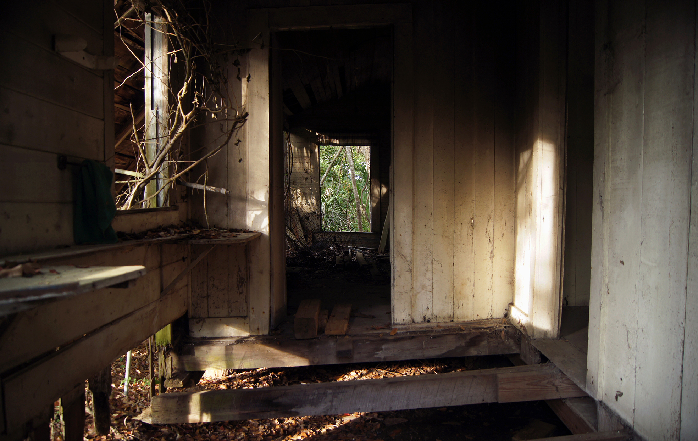

Forsaken Memories:
A Journey Back in Time
Digital Photography
Apalachicola, Florida, is the Forsaken town that hearkens to the simple, comfortable, carefree life that existed fifty years ago. Many have left for more stimulating locations and others came and settled. You will leave you cares behind and forget your worries in this waterfront town along the Forgotten Coast. During this process, I continued to ask myself questions; Who worked, lived and loved in these places? Pictures of things that once were very important parts of someones world. Where are their people? Why were they left alone and uncared for? I look at each and every place or thing and wonder about its past. I try to assemble their history and understand their story. My photos make them remembered once again and they are content. A forgotten place that is once again becoming part of our collective memory.

- 